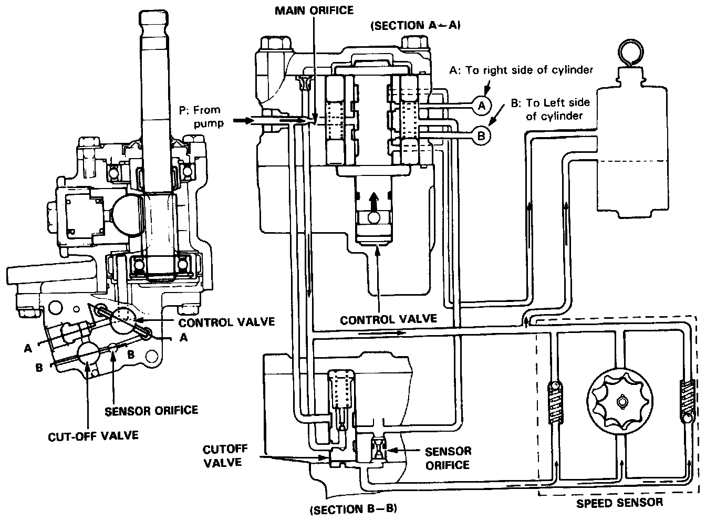
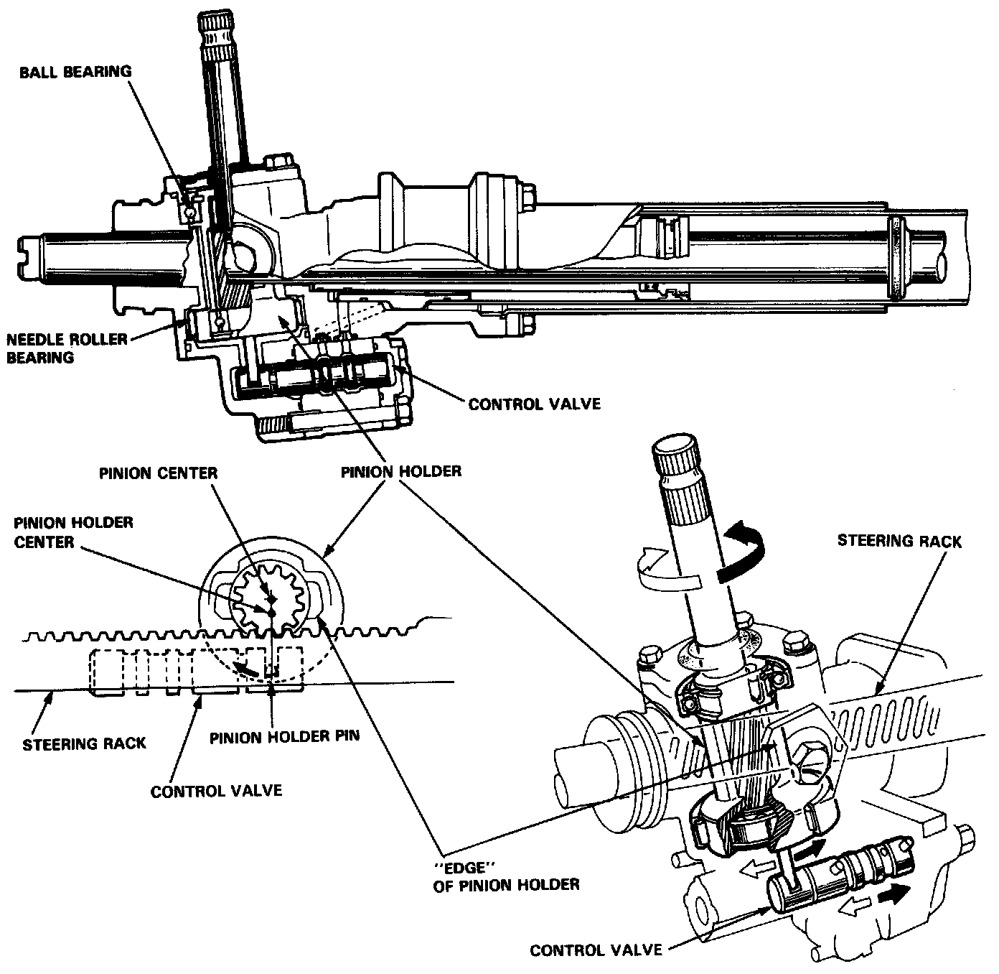
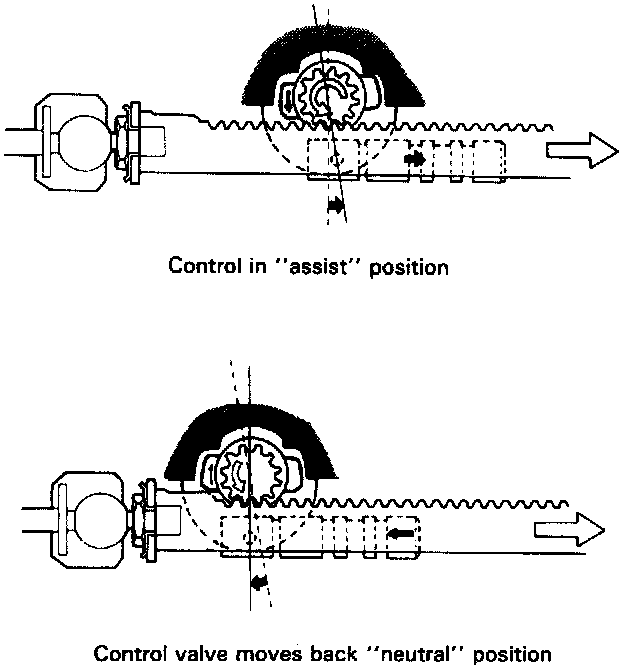
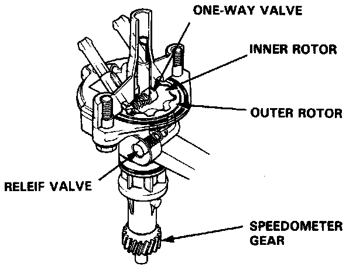
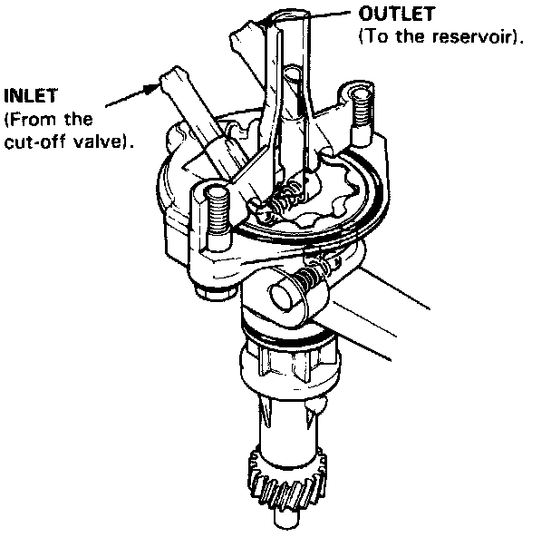
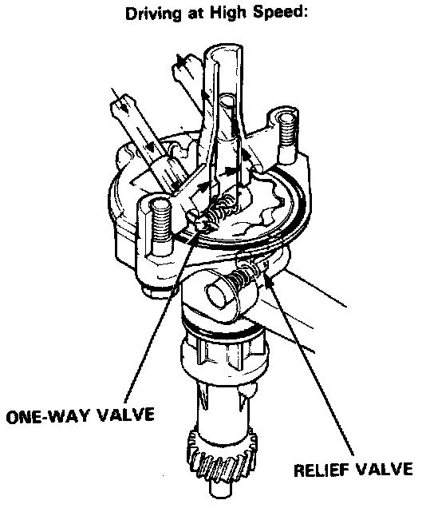
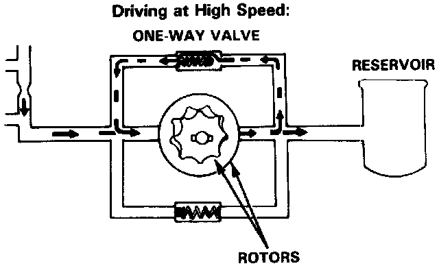
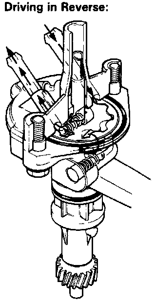
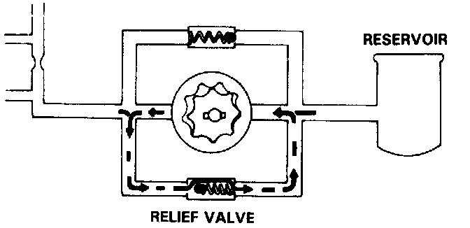

Power Steering Pressure Control Valve: Description and Operation

Control Valve
Mounted on the lower side of the gear box is a control valve, that is moved horizontally by a pin on the pinion holder to
shift fluid pressure to the right or left side of the Power Cylinder when the steering wheel is turned.
It has thrust pins at both ends, and two inter-connected reaction chambers, one on each side.
Each reaction chamber contains a pair of spring loaded plungers that ride against right and left thrust pins.
The following valve body fluid passages are controlled by the control valve.

Control Valve
In the power steering unit, the method used to direct a single source of fluid pressure in either of two directions (for left or right turns) involves the pinion gear transferring a "message" of direction to the fluid Control Valve.
The pinion is mounted slightly off-center in a pair of bearings, which are in turn mounted in a Pinion Holder cylinder that rotates, centered in its own outer bearings. At the bottom of the Pinion Holder is a pin, which fits in a slot in the Control Valve.
As the pinion is turned (to turn left or right), because it is off-centered it also moves slightly along the rack. This movement is transferred to the holder. The pin in the holder then moves the Control Valve, to direct fluid pressure to either side of the rack Power Cylinder.
The back edges of the pinion holder (facing away from the rack) hit the stops cast into both sides of the gear housing to avoid pushing the control valve too far in either direction. The front edge of the pinion holder cuts off assist at full lock.

Unloader System
The control valve shifts the direction of fluid flow when the steering wheel is turned, right or left. However, when the wheel is turned to right or left lock at parking speed, the edge of the pinion holder rides up on the end of the rack, moving the pin in the opposite direction which pulls the control valve back to neutral.
This keeps pump pressure from building up (which could cause idle speed to drop), and improves steering feel by increasing resistance at left and right lock.

Speed Sensor
The speed sensor is a trochoid-rotor, hydraulic pump combined with a relief valve and a one-way valve. It is driven by the speedometer gear shaft which in turn is driven by a helical gear on the differential.

It turns only when the car is moving, controlling the cut-off valve by regulating fluid pressure in the control unit according to the speed of the car.
With the car parked engine running, fluid flow through the sensor rotors is blocked because the rotors are not turning

As the car is driven away, the rotors start turning and pump fluid back to the reservoir, reducing pressure at the cut-off valve. The cut-off valve begins cycling, staying open for longer and longer intervals as the car accelerates and the sensor reduces the pressure further. This allows pressure in the reaction chambers to rise, restricting control valve movement more and more, and gradually reducing the assist as speed increases.

One-way Valve (In Speed Sensor)
When the car is moving at high speed, negative pressure develops at the sensor inlet because the sensor is pumping faster than the fluid can be supplied. To compensate for this, the outlet and inlet ports are connected internally by a passage containing a one-way valve that lets output fluid recirculate to the inlet port to equalize pressure.


Relief Valve (In Speed Sensor)
When the car is moving in reverse, the speed sensor also turns backward and pumps fluid in the opposite direction. To avoid building up pressure in the reaction chambers that would increase steering effort while driving in reverse, the inlet and outlet-ports are connected by a second internal passage containing a relief valve that allows the fluid to recirculate.